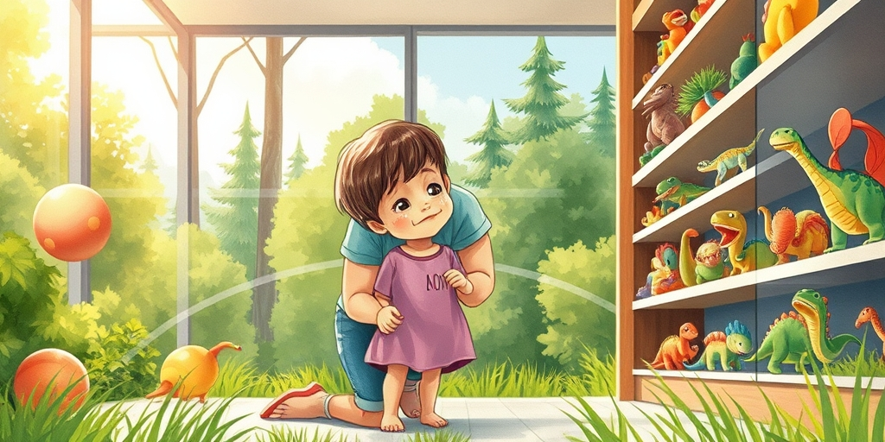
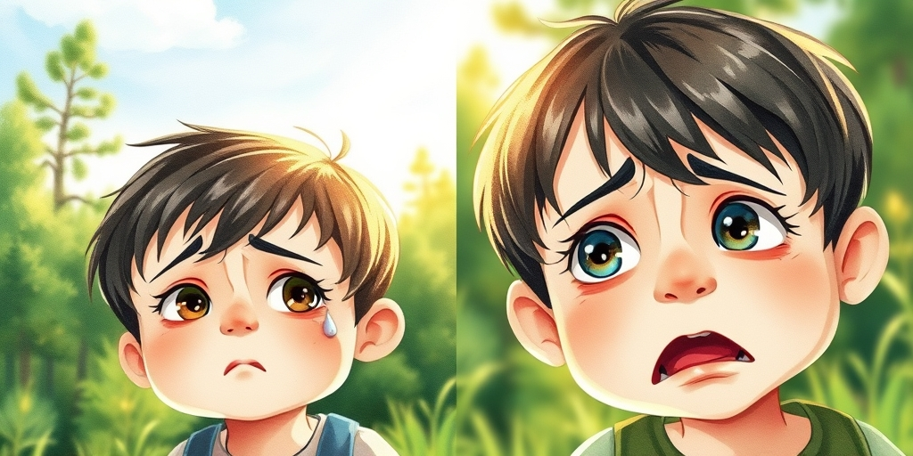
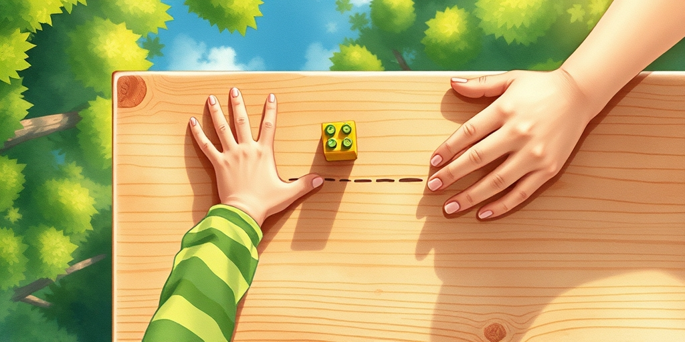
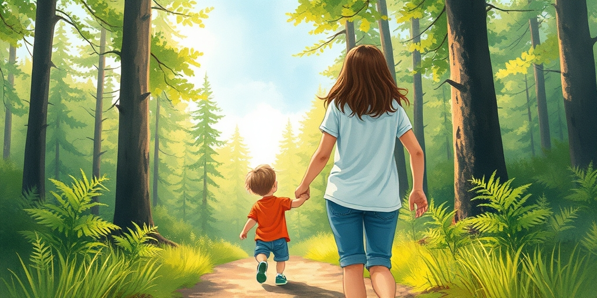

小汪老师的成长洞察 · 属于你的成长专栏
当“你不爱我”从孩子嘴里说出来，它可能不是一句求救，而是一枚精确制导的导弹。你的爱，正在被训练成一种条件反射的燃料。

周末商场玩具柜台前，一个五岁男孩抱着最新款的恐龙战队不撒手。妈妈摇头，说家里已经有类似的了。男孩瞬间爆发，哭声穿透整个楼层：“你是坏妈妈！你根本不爱我！”
周围的目光聚拢过来。妈妈的脸涨得通红，一半是尴尬，一半是刺痛。那句话像针，扎进所有父母最柔软的地方。她下意识想掏钱，只为让这句话消失。很多家长就在这种时刻，亲手交出了爱的定义权。

孩子表达痛苦的方式千差万别，但本质只有两种。一种是真实痛苦的流露：摔倒了的疼、被朋友拒绝的委屈、努力后的失落。这种痛苦，需要的是我们的同理心——我看见你正在经历什么，我陪着你。
另一种，是习得性控制。孩子偶然发现，说出“你不爱我”这句话，能瞬间击穿父母的防线，得到他想要的东西。这不是因为他本性坏，而是他发现了一个有效的生存策略。如同实验室里按压杠杆就能获得食物的小鼠，孩子在按压我们的情感杠杆。同情心是“我必须立刻消除你的痛苦”，同理心是“我理解你的感受，但你需要自己面对这个边界”。混淆两者，爱就变成了被操控的提线木偶。

如何区分真实痛苦与情感勒索？不要看单次事件的激烈程度，要看发生的模式。一个核心判断标准是：这种极端的情绪宣泄，是否只在要求被拒绝后出现？
孩子想要冰淇淋，你说不行，他立刻哭喊你不爱他。但如果你转身说“好吧”，他能否在一分钟内破涕为笑，开心地吃起来？如果答案是肯定的，那么这种痛苦就不是深层的、持续的，而是一种达成目的的工具性表演。这与孩子因遭受挫折而持续数小时的低落、沉默或流泪，有本质区别。真正需要警惕的，是那些只在对抗规则时才出现的“绝望宣言”。
每一次对情绪勒索的屈服，都在给孩子发送一条扭曲的指令：你的感受比事实更重要，情绪是解决问题的万能钥匙。这个指令一旦被内化，伤害将在未来显现。
一个在家庭中从不被拒绝的孩子，进入学校和社会后，将面临残酷的认知失调。他会发现，世界不会为他的情绪买单。同学不买账，领导不妥协。这种落差会让他倍感挫败，人际困难。他从未学会一个关键的心理课：我的需求可以被拒绝，但我这个人依然是安全的，被爱的。拒绝的不是你，而是这件事。缺乏这种区分能力，他将在社交中持续体验到幻灭。有研究显示，青少年中期的焦虑感常被家长忽略，而错误的情感回应模式会加剧这种焦虑的隐藏（参考：Medical Xpress， https://medicalxpress.com/news/2026-05-puberty-anxiety-children-parent-awareness.html）。

那么，当孩子说出那句诛心的话时，我们具体该怎么做？第一步，处理自己的情绪。那句话让你感到受伤，是正常的。但请深呼吸，告诉自己：这是他的情绪风暴，不是对我人格的终极审判。
第二步，共情情绪，坚持规则。蹲下来，看着他的眼睛，用平静的语气说：“你现在非常想要这个玩具，得不到让你太失望了，妈妈理解这种感觉。”这是共情。然后清晰地说：“但我们今天约定好了只看不买，所以这个玩具今天不能带回家。”这是坚持规则。把“你”和“事”分开。你的爱没有减少，只是这件事不行。
第三步，给予安全感的确认。在风暴平息后，通过一个拥抱或陪伴告诉他：“刚刚妈妈说不行，但妈妈永远爱你。”让孩子体验到，即使需求被拒绝，关系依然是牢固的。这才是他未来面对世界拒绝时，内心真正的底气来源。
给家长的小提示
下次当那句“你不爱我”再次袭来时，不妨先问自己一个问题：我是在回应他的痛苦，还是在恐惧我自己“不被爱”的标签？你的平静，才是孩子情绪最好的容器。
别怕让孩子失望。真正摧毁一个孩子的，从来不是合理的拒绝，而是他从未学会如何与失望共处。你今天给的“温柔而坚定”，是他明天应对人生风雨的铠甲。
参考资料
[1] Puberty may hide rising anxiety in children as parent awareness lags (Medical Xpress) https://medicalxpress.com/news/2026-05-puberty-anxiety-children-parent-awareness.html
小汪老师的成长洞察 · 属于你的成长专栏